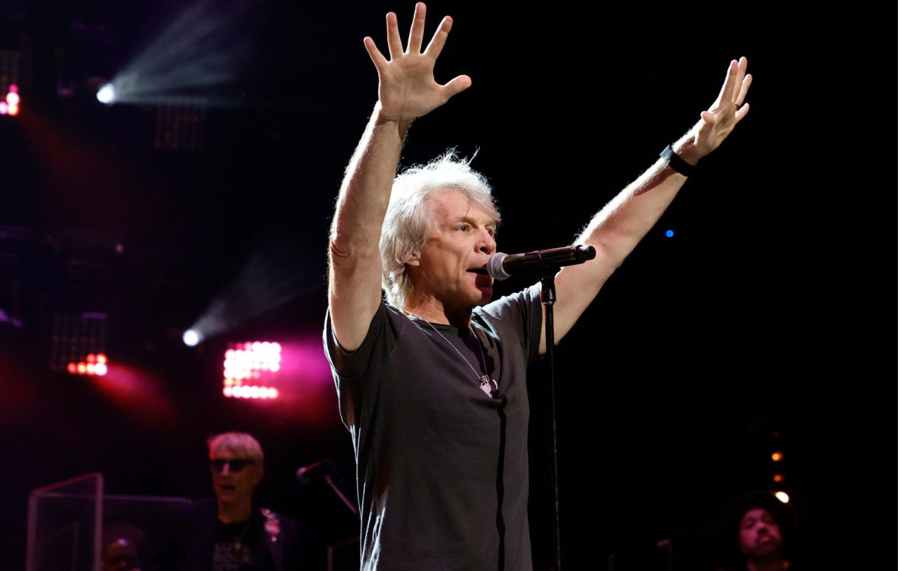

Jon Bon Jovi, Rock Icon, Dies at 63 in Car Accident
Frontman of Bon Jovi, whose anthems defined a generation, was killed in a crash late Monday night.
Jon Bon Jovi performing during a 2023 tour. He died Monday night in a car crash. Photo by Getty Images.
Jon Bon Jovi, the legendary rocker whose voice and songwriting defined arena rock for decades, died Monday night in a car accident in New Jersey. He was 63.
The accident occurred around 11:45 p.m. on the Garden State Parkway, according to local authorities. Bon Jovi was reportedly driving alone when his vehicle lost control near an exit ramp, colliding with a barrier. Emergency responders pronounced him dead at the scene.
New Jersey State Police have not yet released further details about the crash, and an investigation is ongoing.
A Life in Rock and Roll
Born John Francis Bongiovi Jr. in Perth Amboy, N.J., Bon Jovi rose to global fame in the 1980s as the frontman of Bon Jovi, the band behind hits such as Livin’ on a Prayer, Wanted Dead or Alive, and You Give Love a Bad Name.
Over a four-decade career, Bon Jovi sold more than 130 million albums worldwide, blending rock, pop, and blue-collar storytelling. His raspy vocals and anthemic choruses made him one of the most recognizable figures in music.
Tributes Pour In
As news of his passing spread, tributes from the music industry, politicians, and fans flooded social media.
“Shattered. No words. Just love. Rest in peace, brother.”
New Jersey Gov. Phil Murphy called him “a true son of the Garden State” and said, “His music was the soundtrack of our lives.”
Bon Jovi is survived by his wife, Dorothea Hurley, and their four children.